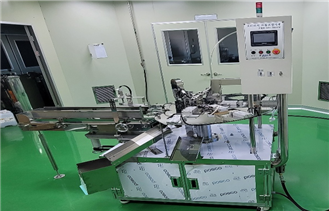
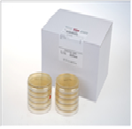
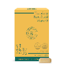

JBF 뉴스레터 49호
Jeonnam Bioindustry Foundation supports the Bioindustry through research and development and advanced technology
 천연물 의약품 원료 플랜트 개소식 모습
천연물 의약품 원료 플랜트 개소식 모습
주요소식
 진흥원 소식
진흥원 소식
생물의약연구센터
일자/장소:'22.4.14(목)/생물의약연구센터 참석:협의회참여기관(8기관), 바이오기업(50기업) 등 주요내용:협의회 참여기관 기업지원사업 활용 방법 안내
화순바이오메디컬 협의회 기업지원 설명회 개최
생물의약연구센터
일자/장소:'22.1.12(수)~21(금)/기업회의실 대상:화순백신투구 입주기업 6기업 주요내용:센터 추진사업 홍보, 기업공동협력사업 발굴, 기업애로사항 청취등
화순백신특구 입주기업대상 '찾아가는 간담회'개최
나노바이오연구센터
일자/장소:'22.1.27(목)/광주대학교 참석:나종희 산학협력단장, 김용주 센터장 등 주요내용:LINK3.0 사업에 대한 기관 상호협력, 바이오헬스케어 분야 인력양성
나노-광주대학교 산학협력단 업무협약 체결
나노바이오연구센터
일자/장소:'22.1.28(금)/나주 빛가람호텔 참가기업:농업회사법인(주)장수식품, 영산홍어(주),(주)바이오에프디엔씨, 등 주요내용:말레이시아, 영국. 필리핀 등 해외바이어 상담회 매칭
바이오헬스케어산업 해외바이어 온라인 수출상담회 성공리 개최
천연자원연구센터
일자/장소:'22.2.28(월)/천연센터 대강당 대상:전남지역 바이오기업 20여개사 주요내용:기업지원사업 3개관 공동설명회, 산업재산권 및 나고야의정서 전문가 상담회
더보기
호남생물자원관과 바이오기업 지원사업 공동설명회 개최
천연자원연구센터
일자/장소:'22.4.6(수)/화순 천연물의약품원료 플랜트 참석자:전남 행정부지사, 신정훈 국회의원, 화순부군수, 협약기업대표 주요내용:시설구축 경과보고, 기업 투자협약, 기술이전 등
더보기
천연자원연구센터 천연물의약품 플랜트 준공식 개최
해양바이오연구센터
일자/장소:'22.4.4(월)/해양센터 참석자:센터 전직원 박희연 센터장은 해양바이오산업을 한 단계 높게 발전시키는 데 센터 역할을 강조하며..더보기
박희연 해양센터장 취임
해양바이오연구센터
일자/장소:'22.3.18(금)/순천시청 참석자:센터장 외 3명 주요내용:도내 화장품 산업 활성 및 육성을 위한 업무협약
순천바이오헬스케어연구센터 업무협약
 장비소개
장비소개
| 장비명 | 장비설명 | 담당자 및 연락처 | 사진 |
|---|---|---|---|
| Bioreactor |
|
김민호 선임, 061-370-1332 | |
| 초임계 비극성 물질 추출 장비 | Co2 가스를 이용한 천연물 추출 및 분리정제 | 김대현 주임, 399-0562 | |
| 로타리 마스크팩 자동충전기계 | 화장품 마스크팩 생산 | 박문영 선임, 550-1723 |  |
 입주기업 소개
입주기업 소개
| 기업명 | 주요내용 | 사진 | 자세히보기 |
|---|---|---|---|
| 영사이언스살라우코리아 |  | 홈페이지가기 | |
| (주)브라이언스랩 |  | 홈페이지가기 | |
| 해미원 영어조합법인 | 홈페이지가기 |